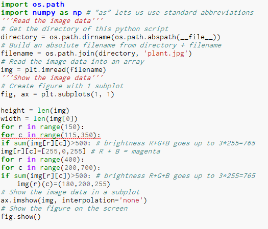
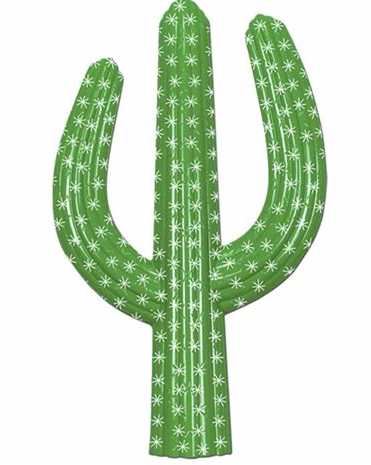
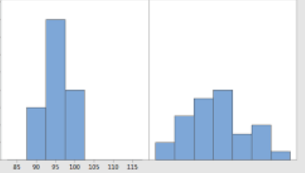
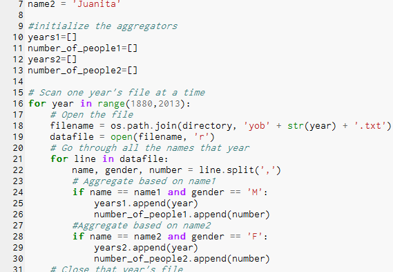
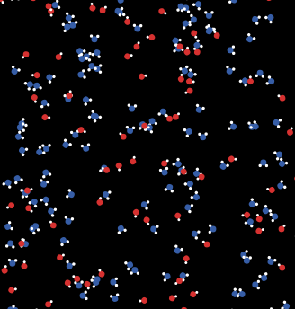
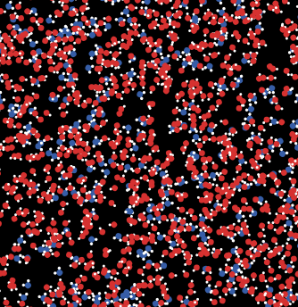

This is my portfolio page:)

Second day scratch project

Tilt maze game using mit app inventor

Scan the QR code to install the tilt maze app.The idea is based on puzzles in which a ball rolls around and goes through a maze. To start, tip the screen so that the ball appears in the center of the maze. Once the ball is on the screen, try moving the ball through the maze without touching any of the walls.
The story of LeBron game

This is an interactive game that takes you through LeBron's childhood to his current life. Click yes or no to see where he would have ended up if he chose to do what you clicked.
Roman numeral converter using python
Editing photos using python
 Histogram/ comparing data usig python. IQ difference between private school students and public school students. As you can see the private school is to the left and it is shown that they are mostly above average or average while the public school has a diverse distribution.
 We used a premade code from NetLogo and modified/remixed the codes. The image on the left is the original and the right is the remixed code.  